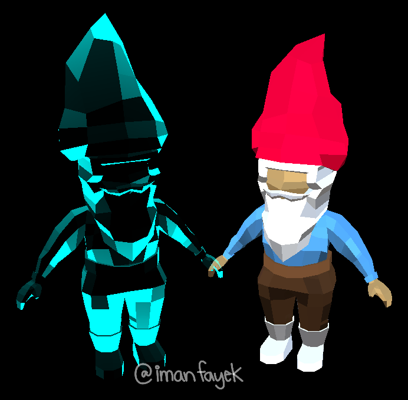
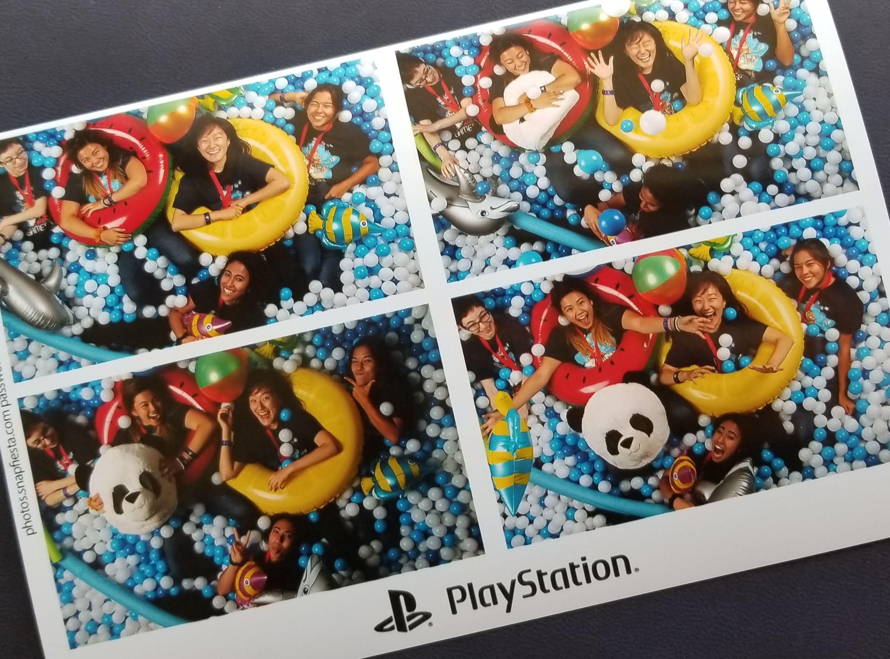
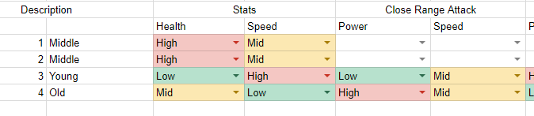
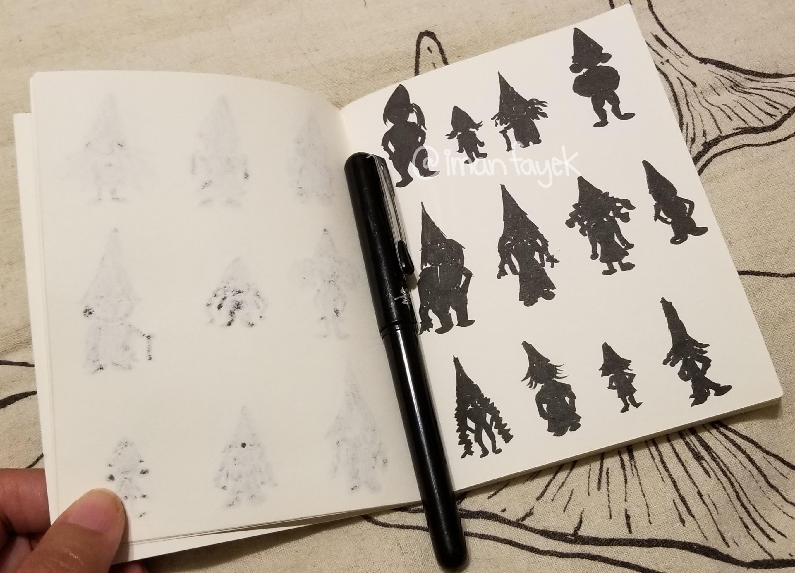
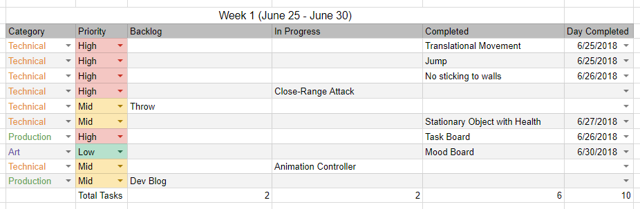
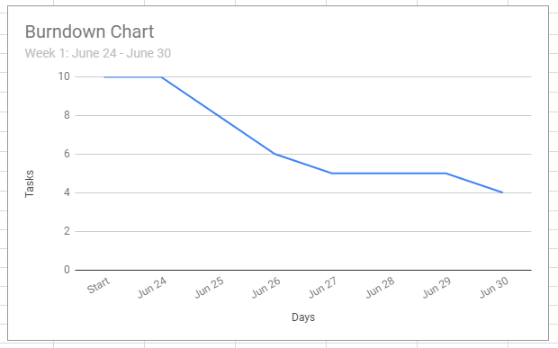
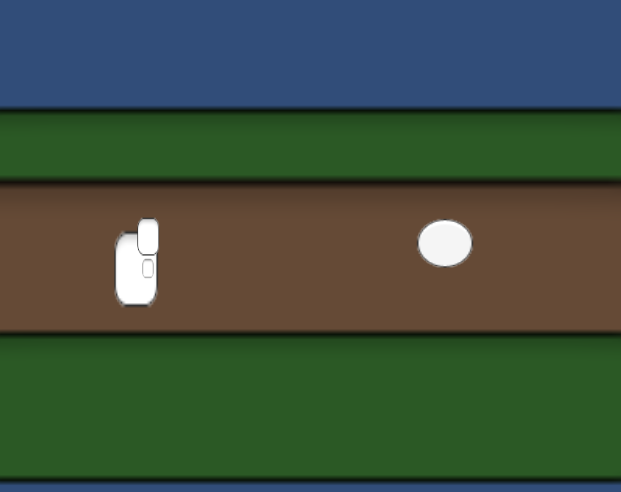

Aaaaand two more break weeks! Teaching at Girls Make Games ate up a lot more time than I initially anticipated. Not that I’m complaining! I had a great time with my team and the girls at our camp. Along with being the lead Unity instructor, I had a wonderful team of four high-schoolers that I was mentoring through the process of making a game. They were all totally incredible to get to know and I am so insanely proud of the game that they ended up making! Check it out here:
Being surrounded by so many amazing girls/ladies/women was the best! There was so much love radiating from everyone at camp - my favorite thing was seeing the older girls taking care of the younger girls. So sweet!
So aside from teaching, why have I been so MIA? Two weekends ago, I was fortunate enough to be able to attend San Diego Comic Con! I flew out Saturday morning at 6am, and flew back Monday morning at 6am - just in time to head to work :)
And this weekend was spent at GMG networking events. The first was a picnic with Double Fine! I got to chat quite a bit with Tim Schafer and I’m p sure that I’m now the weird gnome girl. Speaking of gnomes, I’ve been learning shaders and testing them on my gnome 3D model. Check it out:
The second event was with Playstation! Got some good advice from some really cool ladies and got to spend my last day with the Mountain Crew! After three weeks of working with my team and fellow counselors/coordinator, I am so sad to say goodbye!
Anyways, normal dev should hopefully continue this week! I made sure to tell Tim about my game plans, so pressure is ON!
Break week! Actually, I’ve been teaching game development in Unity at a Girls Makes Game summer camp, so things have been a bit hectic this week. Now that I’ve gotten into the swing of things, normal dev should commence! :)
Hello hello!
I am starting a new game!
Not much happening this week! I’m still working to find the right balance between making tangible progress on the game and allowing my hands to rest. I’m also starting a summer teaching position at GirlsMakeGames next week, where I’ll be the lead Unity instructor, so I’ve been brushing up on the program’s curriculum. I’m very much looking forward to it!
Anyways, since I’ve been a wee bit busy this week, I focused more on tasks that didn’t require Unity. Instead, I’ve been existing primarily in spreadsheets and in notebooks.
Little known fact: I did a lot of Excel spreadsheet manipulation in my undergrad. As an Environmental Engineering major, I was constantly working with large sets of data and using Excel to analyze trends and create reports. My career has since moved on, but I’m pretty thankful that I know how to navigate around a spreadsheet. For this game, I’ve opted to use Google Spreadsheets, as it allows me to nonchalantly move around computers. I have found it to be less enjoyable than Excel, but it’s all good.
This week, I started working on character design. Since this is a beat-em-up, I’m working with at least four different characters. Each of those characters needs a set of traits that defines their playstyle. In comes the spreadsheet. I didn’t make too much progress on this, but here’s a look at how I’m currently trying to balance things.
Still needs a lot of work, but at least I’ve got the table formatted! :)
In addition to thinking about how I’ll start balancing these characters, I’ve also been working on designing their appearances. It’s admittedly maybe a bit early for character design, but, as an artist, this kind of work keeps me inspired and driven.
To start out the process, I grabbed a little mini notebook with blank pages (thank you Erin for the notebook!) and a pentel brush pen. Here are some of the resulting silhouettes:
As you can see, there’s still a lot to be done! It didn’t occur to me until halfway through this week that I should be doing two week sprints (or like chill jogs) rather than one weekers, so that’s something I will consider moving forward. Kind of depends on how GirlsMakeGames shakes out!
As always, you can find me on the ol twitter (@imanfayek) if you want to chat!
Hi friends!
I am starting a new game!
What am I making?
I’m making a beat em up! With gnomes! There’s def more to it than that, but I’m going to stay a bit tight-lipped for now. But yay gnomes!
I am currently a team of one, but I have plans to hopefully expand a bit once I feel that the project is worth expanding. And once I have money to pay people, because paying people is important to me. Even if they’re my friends. Hell, especially if they’re my friends. I also intend to collaborate with other women, people of color, or just underrepresented groups in general. I want a team picture that truly embodies diversity, because I think that will lead to the strongest game.
Since I’m currently playing all the roles, this should be interesting! I started off by playing designer and writing up a couple of pages of design. Then, I put on my Mr. Manager face and made myself a fake Jira board in Google Spreadsheets.
Here’s some quick pics of what I made for myself!
 If you’re judging me for my terrible burndown chart, don't. But also keep in mind my hands hurt (I've been having p bad carpal tunnel symptoms) and I am quick to take long breaks when they act up. No game is worth my hands. I’m doing somewhat daily yoga (shout out to Yoga with Adriene on YouTube) and looking into a more ergonomic keyboard situation, so hopefully my charts will improve. Definitely better than the time one of my teams ended up with a burnup chart. Big oops.
Anyways, I started out with the game in 2D and quickly moved it into 3D. Movement made a lot more sense in a 3D space, since I need 3-axis movement and didn’t want to hack it into 2D if I didn’t need to.
It is currently very ugly to look at and the artist in me really hates that. But I have a somewhat solid start on my mood board, so I'm feeling good about that. Here’s a little pic of where I’m currently at:
So yeah. I’ll try to be better about sharing my progress! I definitely want to try and keep a weekly devlog happening. They will probably be more on topic, especially as I get more into the groove. I may play around the the blog format a bit here and there, since my website is made from scratch. Haven’t quite built something like that before, so should be fun.
Until then, feel free to hit me up on twitter (@imanfayek) if you want to chat about games or whatever!